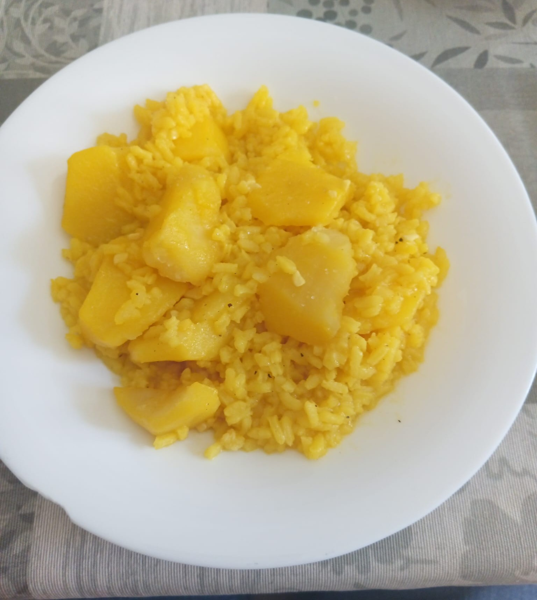
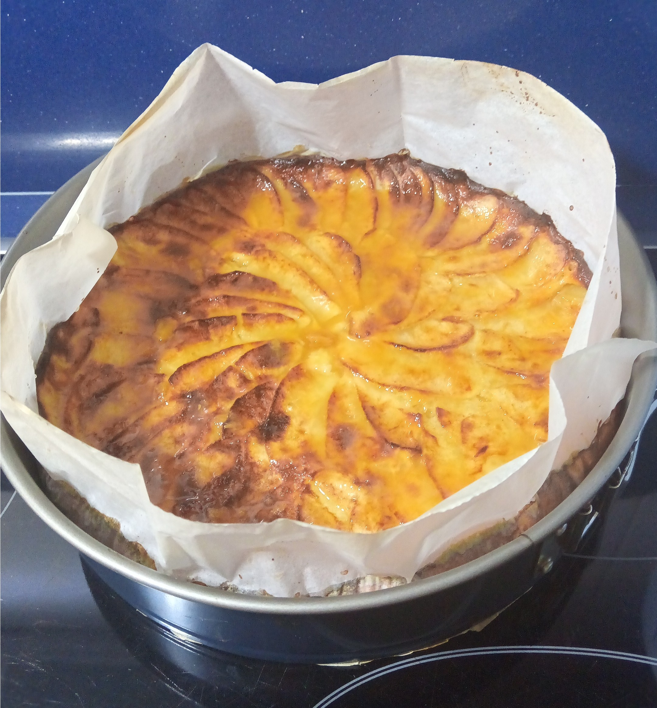

La comida es parte esencial de nuestra existencia, un habito que comenzo por necesidad y que a dia de hoy se considera practicamente un placer, uno de los aspectos en los que la comida influye tantisimo es en nuestra cultura, la cultura gastronomica de un pais habla muchisimo sobre su historia, principalmente de tiempos de necesidad, recetas que son saludables y sabrosas que surjen a partir de la escasez de productos, un ejemplo de esto pueden ser las patatas con arroz un guiso que conbina dos productos realmente baratos y abundantes con un poco de ajo, peregil, agua y el conocido "amarillo" y si tenias a mano un poco de avecrem. Otro claro emjemplo de esto puede ser la casqueria, por si usted desconoce lo que es la casqueria, es el conjunto de lo que normalmente se considerarían desechos, como puede ser el higado, los intestinos, genitales, glandulas salivares y cerebro entre otras. Comida que a simple vista parece completamente repulsiva, sin embargo son perfectamente las partes más sabrosas de los animales, con cierta preparacion y limpieza.

Recetas y productos que con el paso del tiempo la masificación de productos y la facilidad de obtención de carnes y verdura de primera calidad están resultando, si bien es cierto en una mejor alimentación, en una perdida masiva de recetas y tecnicas tradicionales. Esto sumado a los "gadgets" modernos de cocina y los famosos robots de cocina está provocando esta perdida de conocimiento, las personas ya no quieren cocinar y las recetas tradicionales se están perdiendo y las que no se estandarizan, ya que con el acceso a internet no es necesario que personas de tu familia, como abuelos/as, madres y padres, te tengan que pasar esa receta.

Aqui es donde entra está pagina web, aunque parezca algo ironico, busco plasmar en esta pagina web una pequeña parte de los conocimientos que he adquirido a lo largo de mi vida, y aunque tan solo tengo 20 años en el momento de la creación de esta pagina web siempre he disfrutado de la cocina tanto en familia como en solitario es algo que se me ha inculcado desde la niñez, y un pequeño conjunto de recetas familiares. El proceso de cocinar como un placer y no como una lavor algo divertido y relajante que hacer en tu tiempo libre y que puedes compartir a posteriori con amigos y familia y es lo que intentaré plasmar aqui.